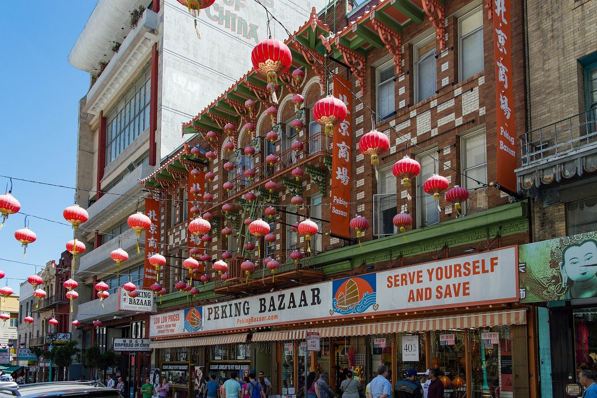

Chinatown
The oldest Chinese community in North America, on the slopes above Portsmouth Square, extending east into the brick blocks of Jackson Square.

Map
Named buildings and landmarks
-
-
-
-
-
-
-
-
-
-
-
-
Also here: Chinatown YWCA, PG&E Old Station J, Old Federal Reserve Bank Building, Columbus Savings Bank, City Lights Bookstore, Chinatown Branch Carnegie Library, Jones-Thierbach Coffee Company Building, Transamerica Redwood Park, Sun Building, Sing Chong Building, Lundstrom Hat Works, Colombo Building, Asian American Bank Building, Nam Kue School, PG&E Station J, U.S. Appraisers Stores and Immigration Station, Ping Yuen, Ping Yuen North, Hartford Building, China Trade Center, Hilton Hotel, Mandarin Tower, Transamerica Pyramid, Tommy Toy's Cuisine Chinoise, International Hotel.
Streets documented so far
- Battery Street
1 building, built 1989. - Beckett Street
2 buildings, built 1908–1922; 2 in the Chinatown Historic District. - Broadway
4 buildings, built 1907; 4 in the Jackson Square Historic District Extension. - California Street
1 building, built 1908. - Clay Street
1 building, built 1900. - Columbus Avenue
17 buildings, built 1907–1915; 2 in the Jackson Square Historic District. - Commercial Street
1 building, built 1923; 1 in the Chinatown Historic District. - Cooper Alley
1 building, built 1908; 1 in the Chinatown Historic District. - Filbert Street
2 buildings, built 1907–1982. - Front Street
1 building, built 1910. - Gold Street
1 building, built 1900; 1 in the Jackson Square Historic District. - Grant Avenue
1 building, built 1966; 1 in the Chinatown Historic District. - Green Street
4 buildings, built 1907–1920. - Hotaling Place
1 building, built 1900; 1 in the Jackson Square Historic District. - Jackson Street
The Presidio & Ferries Railroad's horse car barn, in the Jackson Square Historic District. - Joice Street
2 buildings, built 1908–1910. - Kearny Street
1 building, built 1905. - Mason Street
4 buildings, built 1907–1911. - Montgomery Street
1 building, built 1906; 1 in the Jackson Square Historic District. - Pacific Avenue
3 buildings, built 1950–1969. - Powell Street
11 buildings, built 1907–1980; 1 in the Washington Square Historic District. - Ross Alley
2 buildings, built 1907–1908; 2 in the Chinatown Historic District. - Sacramento Street
1 building, built 1908. - Sansome Street
2 buildings, built 1927–1930; 1 in the Jackson Square Historic District. - Spofford Street
5 buildings, built 1906–1908; 5 in the Chinatown Historic District. - Stockton Street
1 building, built 1911; 1 in the Chinatown Historic District. - Stone Street
1 building, built 1913. - Trenton Street
4 buildings, built 1907–1913. - Union Street
9 buildings, built 1907–1924; 2 in the Washington Square Historic District. - Vallejo Street
4 buildings, built 1906–1932. - Waverly Place
3 buildings, built 1907–1911; 3 in the Chinatown Historic District. - Winter Place
1 building, built 1912.
Parks and public spaces
- Willie Woo Woo Wong Playground
Neighborhood park or playground, 28,750 sq ft. - Woh Hei Yuen Playground
Mini park, 15,682 sq ft.
Historic districts here
- Chinatown Historic District
- Jackson Square Historic District
- Jackson Square Historic District Extension
- Kearny-Market-Mason-Sutter Conservation District
- Lower Nob Hill Apartment Hotel Historic District
- San Francisco Neighborhood Movie Theater Historic District (Discontiguous)
- Washington Square Historic District
Adjacent neighborhoods
The Financial District begins east across Kearny Street and North Beach north along Grant Avenue and Columbus. Nob Hill rises west up the grade with Russian Hill beyond it, and Union Square holds the retail blocks south of Bush Street.